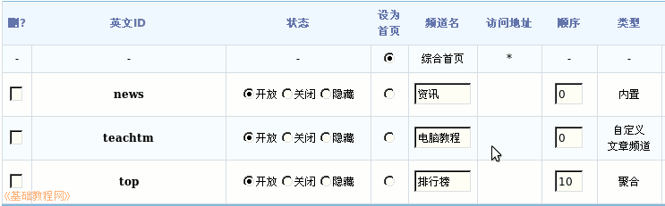
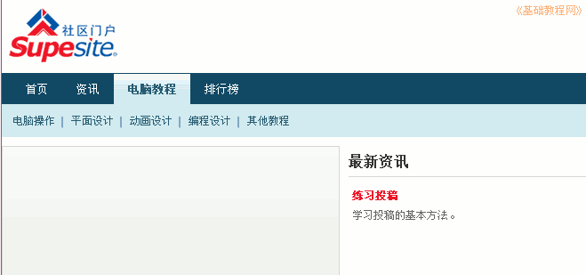

Discuz!论坛安装教程
作者：TeliuTe 来源：基础教程网
门户安装好以后，还需要设置项目和分类，下面我们来看一个练习；
1、设置频道
1）以admin管理员登录SupeSite，点击右边的“管理”进入站点管理；
2）点“系统管理－频道管理”，出来一个列表，其中有三个频道，分别是“综合首页、资讯、排行榜”；
3）默认综合设为了主页，并且不能删除和隐藏，另外两个“资讯”是内置建好的，排行榜是系统聚合来的；
4）门户可以单独做成网站，采用投稿方式，投到各个频道里，也可以通过采集论坛发的帖子，家园的日志等；
5）点“频道管理”右上角的“创建频道”标签，我们来新建一个自己的频道项目；

6）输入频道名称，例如“电脑教程”，这个会显示在首页菜单中，在下面填一个英文名，
类型选“频道”、文章分类写上各个类别，这个在投稿时要用，下面的权限不动；
7）点下面的“提交保存”，新建的频道就显示在列表中，可以在门户中使用了；

2、投稿
1）返回到门户首页，上边出来一个“电脑教程”的链接，点用户名下边的“投稿－电脑教程”；
2）在出来的投稿窗口里，依次填写标题、分类、内容，带红星的必填，然后点下边的“提交”按钮；
3）返回到站点首页，在导航链接里点“电脑教程”，就可以在其他教程里找到这篇文章；

本节学习了创建频道的基本方法，如果你成功地完成了练习，请继续学习下一课内容；
本教程由86团学校TeliuTe制作|著作权所有
基础教程网：http://teliute.org/
美丽的校园……
转载和引用本站内容，请保留作者和本站链接。